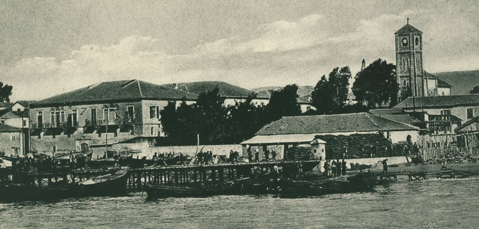

-MERSİN TARİHÇESİ-
Klasik devirde Klikya olarak adlandırılmış olan Mersin; sırası ile Hititler, Frigler, Asurlular, Persler, Makedonyalılar, Romalılar ve Bizanslıların, XI. yüzyılda Selçukluların, XIV. yüzyılda Karamanoğulları ve Ramazanoğullarının XV. yüzyılda da Osmanlı İmparatorluğunun hâkimiyetine geçmiştir.
Yumuktepe ve Gözlükulede yapılan kazılarda Mersin’in tarihten önceki devirlerden beri önemli bir yerleşme merkezi olduğu anlaşılmaktadır. İl Merkezi Mersin’de bulunan Yumuktepe’de, 1937’de Liverpool Üniversitesi Arkeologlarınca başlatılan kazıda; en alt tabaka olarak “Neolitik Devri” tespit edilmiştir. Kazı çalışmalarının devamı bu yörenin Neolitik dönemden sonra Maden Devri ve Tunç Devri arasına bir geçiş yaptığını göstermiştir. Yumuktepe’deki kalıntılar hemen hemen aynı şekilde Tarsus’taki Gözlükule’de de yer almaktadır.
Bir süre yörede Etilerin hüküm sürdüğü görülür. Eti Kralı Hattuşil yöreyi imar ve ıslah etmiştir. Daha sonra Asur kralı III. Salomossa’ın ele geçirdiği Mersin yöresi, M.Ö.528 tarihinde İran Hükümdarlığına geçer, M.Ö.527 de yöreyi ve Kıbrıs’ı Yunanlılar ele geçirirler. M.Ö.334 senesinde yöre Büyük İskender’le Makedonyalıların eline geçer.
M.Ö.261-246 da yöreyi Mısır Hükümdarı Batlenios Ogustos zapt eder. M.Ö.70’li yıllarda Romalıların eline geçen Mersin Roma İmparatorluğunun ikiye ayrılmasından sonra Doğu Roma toprakları içerisinde kalır.
İslamiyet’in yayılmasından sonra Halife Osman zamanında Mersin ve civarı Arapların eline geçer. Daha sonra bölge 718 yılında halifeliğin Abbasilere geçmesiyle 853 yılında Sultan Mehdi, yöreyi Abbasi’lere katar. Daha sonra Selçukluların eline geçen yöre bu dönemde kısmi “Haçlı İstilası”na uğrar ve Selçukluların zayıflamasından sonra Karamanoğulları’na geçer.
Osmanlı Padişahı Yıldırım Beyazıt zamanında yöre Osmanlı idaresi altına girer. I. Dünya Harbinde İtilaf Devletlerinin istilasına uğrayan Mersin, Milli Mücadele ile 3 Ocak 1922’de tekrar Türk hakimiyetine girmiştir. 1924 yılında Mersin Adıyla Vilayet olmuş, 1933 yılında da Mersin İçel ile birleştirilerek İçel adını almıştır. 28 Haziran 2002 tarihli Resmi Gazete’de yayımlanan 4764 sayılı Kanunla da İl’in ismi yeniden Mersin olmuştur.
XII. yüzyılda Göksu ırmağının iki yanındaki bölgeye Türkler “İÇEL” demişlerdir. Dağlar arasından girilmesi ve görülmesi güç bir yer olduğu için Selçukluların bölgeyi böyle isimlendirdiği düşünülmektedir.
Mersin adının kökeni konusunda iki değişik görüş yaygın olarak kabul edilir. Bunlardan birincisi, civarda yetişen ve Akdeniz ikliminin tanıtıcı bir bitkisi olan Arapların da Hambales dedikleri Myrtus-Mersin ağacı nedeniyle bölgeye Mersin adı verildiğidir.
İkincisi ise Mersin adının bu bölgede yaşayan “Mersinoğulları veya Mersinoğlu” adındaki bir Türkmen ailesinden geldiğini kabul eden görüştür. Evliya Çelebi’de seyahatnamesinde bölgede yetmiş evli bir Türkmen ailesinin bulunduğunu ve bu ailenin adının da Mersinoğlu olduğunu belirtmiştir. Bir başka görüşe göre ise, Mersin adı bir bitkiden değil, yörede yaşayan Mersinoğlu adındaki aşiretten kaynaklanmaktadır. Mersin adına Anadolu’nun çeşitli yörelerinde rastlamak mümkündür. Örneğin; İzmir, Ordu ve Trabzon’da Mersin, Mersinlik adında köyler bunlardan birkaçıdır.
KAYNAKÇA
- İçel Tarihi, Güzel Sanatlar Matbaası, Ankara, 1968, s.245-246.
